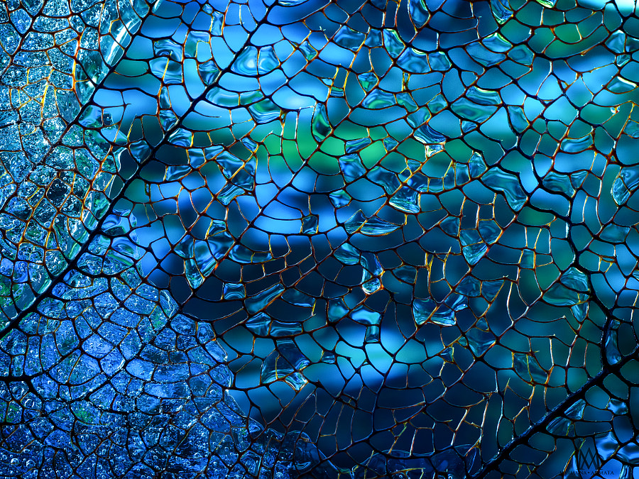
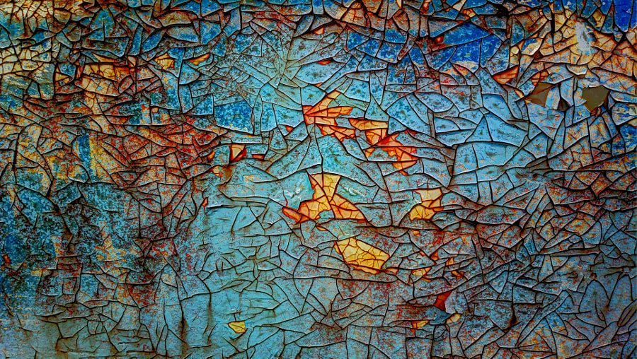
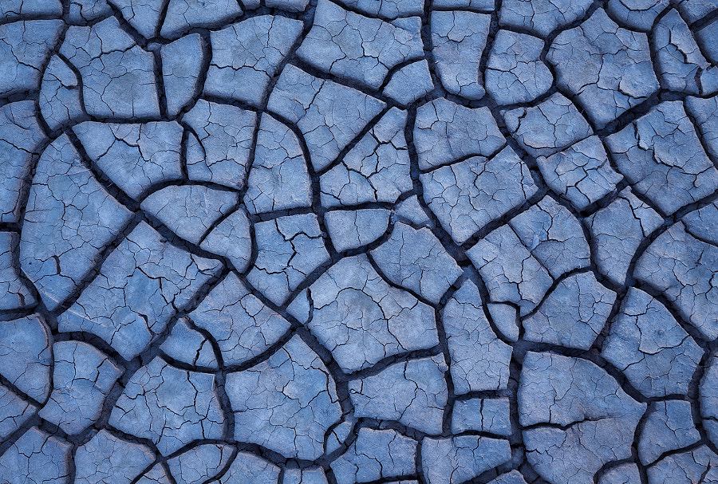
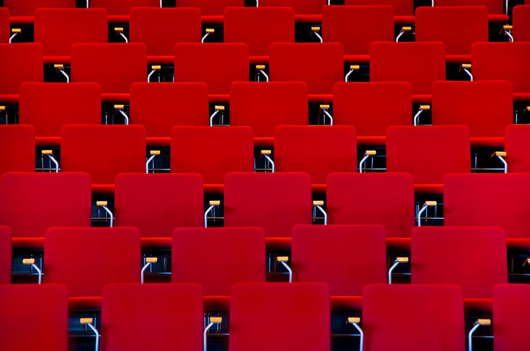
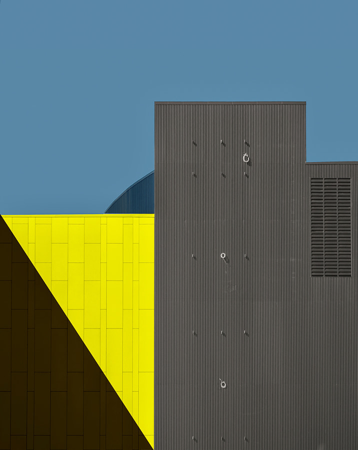
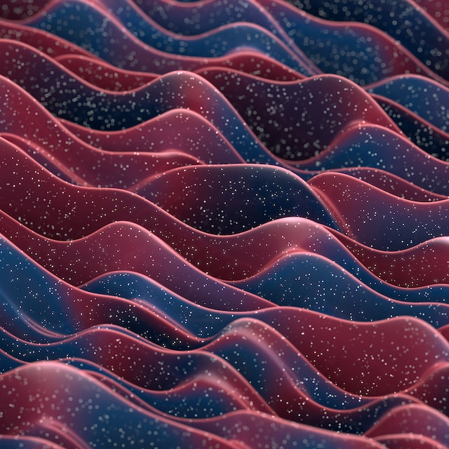
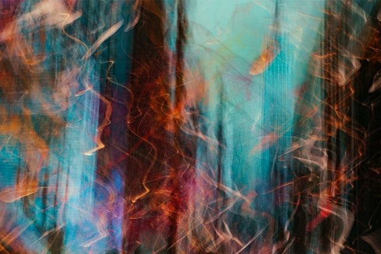
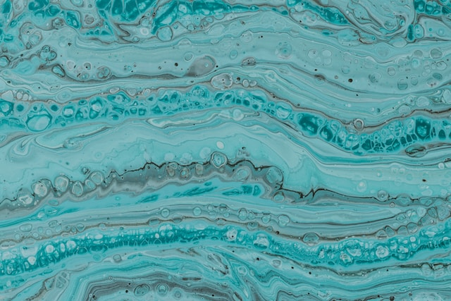
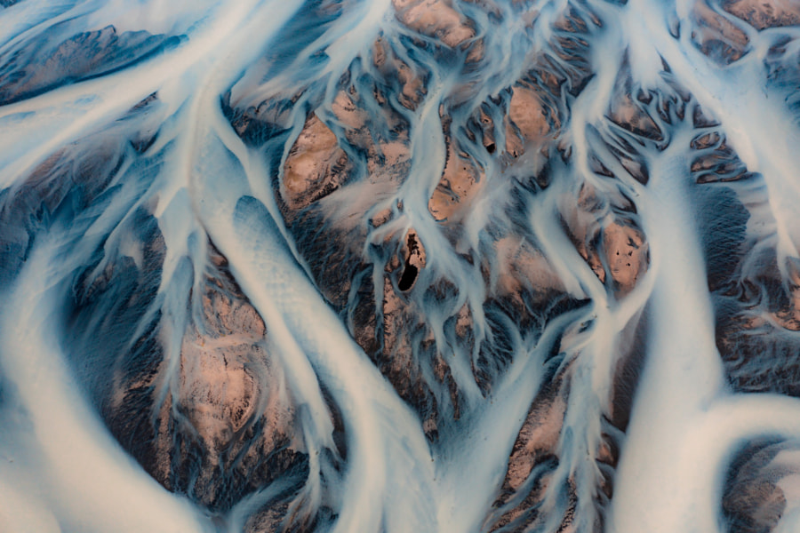

abstract Photography
Abstract photography is a broad genre and can be as simple as a close up of a texture, or more intentional such as long exposure capturing light trails. From overlaying texture onto creative assets to background graphics for print or online media, abstract photography has the potential to suit a variety of needs.
Textures
Although it seems simple, textures are a great way to add salable content to your commercial portfolio. Textures are often used by graphic designers as overlays onto existing content, or to add drama to backgrounds. Snapping photos of textures that you see in your daily routine can help build out your portfolio. Look for interesting textures on buildings, surfaces in your own home, or in nature to help you get started. Form a habit of looking for textures on your shoots and taking a few shots of things you find interesting to build up a database more quickly.
  Cropping your environment
Cropping your environment can result in amazing and unique abstract shots. Use the principles of design to capture a photo that is perfectly balanced and interesting in composition. This will help you stand out to image buyers. Taking photos of architecture and the urban landscape is a great way to practice your composition techniques. We have seen many talented photographers from the Lens community transform everyday scenes into visually stunning abstract shots. Take inspiration from shape, texture, and color to inform your direction.
 Long exposure
Long exposure photography is a fun way to experiment with light and create beautiful and unique photos. Long exposure can add abstraction to a variety of genres. Night photography is a great way to capture abstract shots that are full of contrast and vibrant colors. You can also incorporate long exposure in landscape photography. Waterfalls or misty mornings can be completely transformed into beautiful mysterious scenes, that border the line of abstraction, by making the scene look otherworldly. They can be used by content buyers for backgrounds in graphic design or screensavers. Check out these photos for inspiration.
  Drones
Drone photography is an excellent way of capturing perspectives that we do not see on a daily basis. The scale of drone photography can allow you to capture some really unique and breathtaking abstract shots. Here are some of our favorites.
